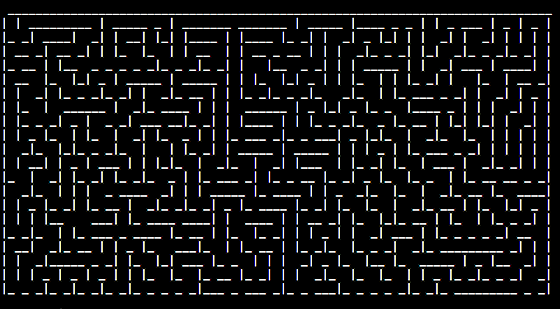
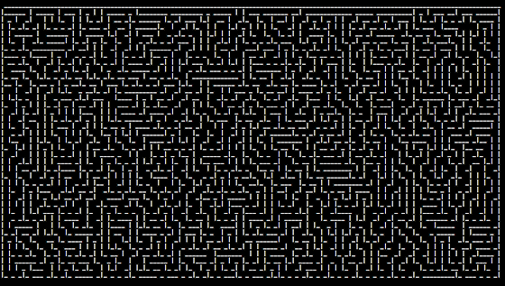
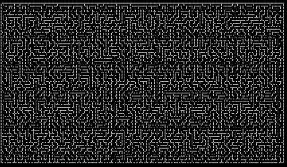

¶
№ 1/7
№ 1/1
Next project: → Bash Gorillas (bash-gorillas)
Previous project: ← Weather report (bash-weather)



This shell script prints an ASCII maze to the terminal screen following the recursive backtracker maze generation algorithm.
This script is a translation of Jamis Buck's maze generator. Released and relicensed with the permission of Jamis Buck. For precise explanation of the algorithm and code please see the original code's website.
- ascii-maze.tar.gz
-
- MD5: 61dc0a70a37608f5e02d9080644b7049
- SHA-1: d15f322dc6fb1a6c55df618c437d989b268ae78d
- SHA-256: 9331288b225efa80eff9a3644202981ce81301e9e022a55cf6821415629ed9ac